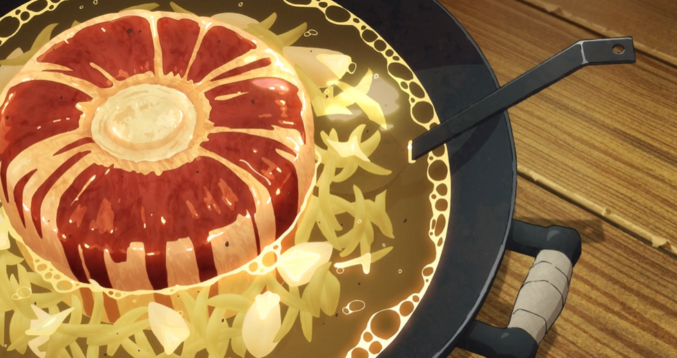

Red Dragon Tail Soup

Description
The tail of a Red Dragon is a prized delicacy. It’s tough, but when cooked in a soup, the meat becomes tender and infuses the broth with a rich, smoky flavor.
Ingredients
- Red Dragon Tail
- Flame Bat Fat
- Fire Tubers
- Golden Moss Potatoes
- Dungeon Rock Salt
- Fire Lizard Spice
- charred Pheonix Feathers
Steps
- Defeat a Red Dragon in the depths of the dungeon and carefully cut off the tail. The tail meat is dense and rich in flavor.
- In a cauldron, render flame bat fat and sear chunks of Red Dragon Tail until browned.
- Add dungeon root vegetables like fire tubers and golden moss potatoes for added texture.
- Pour in water from the dungeon’s magma-heated springs and simmer the soup slowly.
- Season with dungeon rock salt, fire lizard spice, and charred phoenix feathers to enhance the smoky flavor.
- Simmer for several hours until the meat is tender and the broth is infused with dragon essence.
- Serve hot with chunks of dragon meat and vegetables floating in the rich broth. This dish replenishes stamina and provides resistance to fire-based attacks.
Back to homepage